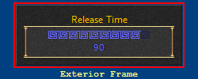
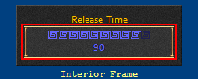

There are two types of frames for the Dialog windows that you can independently change.
The Exterior frame is the one used around the outer edge of most dialog windows.

The Interior frame is the one used around the inside edge of most dialog windows.

Note: I do NOT recommend that you disable both the exterior and interior frames as the text shown in the dialog window may appear blurry. When these options are used it is sometimes difficult to located the move, close, and resize buttons at the corners of the windows.